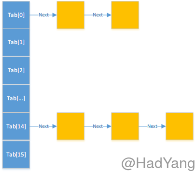

HashMap作为Java Map集合下常用类，我们在使用时对其中的原理知道的很少，最近看了HashMap的源码后觉得还是不难理解，在这里对HashMap做一个分析。
HashMap.Node
在HashMap中，有一个十分重要的类–HashMap.Node，根据源码中的注释我们可以知道Node类是HashMap的基本结点，适用于大多数的HashMap。通过Node类的源码我们可以很容易的看出：这是一个单链表，在每个Node对象中都存储了下一个链表结点的引用。
/**
* Basic hash bin node, used for most entries. (See below for
* TreeNode subclass, and in LinkedHashMap for its Entry subclass.)
*/
static class Node<K,V> implements Map.Entry<K,V>{
final int hash;
final K key;
V value;
Node<K,V> next;
...
public final boolean equals(Object o) {
if (o == this)
return true;
if (o instanceof Map.Entry) {
Map.Entry<?,?> e = (Map.Entry<?,?>)o;
if (Objects.equals(key, e.getKey()) &&
Objects.equals(value, e.getValue()))
return true;
}
return false;
}
}
LoadFactor & Capacity
/**
* The table, initialized on first use, and resized as
* necessary. When allocated, length is always a power of two.
* (We also tolerate length zero in some operations to allow
* bootstrapping mechanics that are currently not needed.)
*/
transient Node<K,V>[] table;

在HashMap内部使用数组来存储Node对象，那数组的大小是怎么确定的呢？HashMap中有一个DEFAULT_INITIAL_CAPACITY的常量，定义了默认的数组大小，当然你也可以通过构造函数传入你想要的初始容量大小。
/**
* The default initial capacity - MUST be a power of two.
*/
static final int DEFAULT_INITIAL_CAPACITY = 1 << 4; // aka 16
在上面的代码中明确写出了数组的容量必须为2的整数次方。这里为什么这样规定，我猜想是为了优化计算时间，因为对2的整数次方的乘除可以使用位运算，对HashMap的效率有一定的提高。
HashMap的构造函数中还有一个参数loadFactor，这个参数被称为加载因子。最初我在看到这个参数时是一头雾水，并没能发现这个参数的作用，后来在HashMap.resize方法中发现了它。学过散列表的人都知道哈希冲突，对于同一个哈希函数，散列表容量越小越容易发生哈希冲突，发生哈希冲突后就降低了散列表快速查找的优势。loadFactor就是解决散列表容量和HashMap中元素个数关系的一个指标，当超过这个指标后就扩大HashMap的容量。
存放元素
向HashMap存放元素是调用HashMap.put函数，最终会调用HashMap.putVal方法。HashMap顾名思义是根据key的hash值进行存储，那么hash值时如何计算的呢？
static final int hash(Object key) {
int h;
return (key == null) ? 0 : (h = key.hashCode()) ^ (h >>> 16);
}
在HashMap中的静态方法hash对key的hash值进行计算，在这里我们可以看到：null的hash值是0，否则取hashCode 异或 自己的高16位，这样做的目的是减少哈希冲突。这个函数的具体分析可以参考HashMap源码之hash()函数分析（JDK 1.8）。
final V putVal(int hash, K key, V value, boolean onlyIfAbsent,
boolean evict) {
Node<K,V>[] tab; Node<K,V> p; int n, i;
//新建的HashMap 第一次都会走这个分支，table没有初始化。
if ((tab = table) == null || (n = tab.length) == 0)
n = (tab = resize()).length;
//(n - 1) & hash 相当于哈希函数，用位运算代替取模运算
//如果没有发生哈希冲突，直接新建一个Node对象并存储在tab[i]位置上
if ((p = tab[i = (n - 1) & hash]) == null)
//HashMap的子类可以通过重写newNode方法修改结点类型
tab[i] = newNode(hash, key, value, null);
//在tab[i]上发生哈希冲突
else {
Node<K,V> e; K k;
//tab[i]上存在一个Node对象和需要存储的Node对象相同，更新它的值，并返回旧值
if (p.hash == hash &&
((k = p.key) == key || (key != null && key.equals(k))))
e = p;
//如果tab[i]上的Node对象是TreeNode的实例，则该HashMap为LinkedHashMap的实例
else if (p instanceof TreeNode)
e = ((TreeNode<K,V>)p).putTreeVal(this, tab, hash, key, value);
//从tab[i]开始遍历单链表，在单链表的最后插入新的元素
else {
for (int binCount = 0; ; ++binCount) {
if ((e = p.next) == null) {
p.next = newNode(hash, key, value, null);
if (binCount >= TREEIFY_THRESHOLD - 1) // -1 for 1st
treeifyBin(tab, hash);
break;
}
if (e.hash == hash &&
((k = e.key) == key || (key != null && key.equals(k))))
break;
p = e;
}
}
if (e != null) { // existing mapping for key
V oldValue = e.value;
if (!onlyIfAbsent || oldValue == null)
e.value = value;
...
return oldValue;
}
}
...
//threshold = capacity * loadFactor，这个变量在resize中赋值
//threshold的文档说明：The next size value at which to resize (capacity * load factor).
if (++size > threshold)
resize();
...
return null;
}
在上面的代码中，我们看到了HashMap存储元素的基本流程，其中包含了哈希冲突的解决方法，即采用拉链法。下面我们来看看一个重要的函数–resize。
Resize
final Node<K,V>[] resize() {
Node<K,V>[] oldTab = table;
int oldCap = (oldTab == null) ? 0 : oldTab.length;
int oldThr = threshold;
int newCap, newThr = 0;
if (oldCap > 0) {
if (oldCap >= MAXIMUM_CAPACITY) {
threshold = Integer.MAX_VALUE;
return oldTab;
}
//扩张HashMap的容量，这里可以看出HashMap中新容量是将旧容量直接乘2得到的
//在扩容的同时将threshold（扩容门限值）增加
else if ((newCap = oldCap << 1) < MAXIMUM_CAPACITY &&
oldCap >= DEFAULT_INITIAL_CAPACITY)
newThr = oldThr << 1;
}
else if (oldThr > 0)
newCap = oldThr;
//第一次调用resize时走这条分支，将capacity 和 threshold都设为默认值
//在这里可以看到threshold的计算方法：capacity * loadFactor
else {
newCap = DEFAULT_INITIAL_CAPACITY;
newThr = (int)(DEFAULT_LOAD_FACTOR * DEFAULT_INITIAL_CAPACITY);
}
if (newThr == 0) {
float ft = (float)newCap * loadFactor;
newThr = (newCap < MAXIMUM_CAPACITY && ft < (float)MAXIMUM_CAPACITY ?
(int)ft : Integer.MAX_VALUE);
}
threshold = newThr;
//创建新容量大小的Node对象数组，并将旧数组中的数据复制到新的数组中
@SuppressWarnings({"rawtypes","unchecked"})
Node<K,V>[] newTab = (Node<K,V>[])new Node[newCap];
table = newTab;
if (oldTab != null) {
for (int j = 0; j < oldCap; ++j) {
...
}
}
return newTab;
}